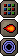

")
Magie - Grundlagen
Einführung
Magie ist eine der nützlichsten und vielseitigsten Fertigkeiten auf RuneScape. Wenn ihr erst einmal gelernt habt, sie richtig zu benutzen, werdet ihr feststellen, dass sie viele andere Fertigkeiten ergänzt. Aber auch als selbständige Fertigkeit ist sie ein unglaublich mächtiges Werkzeug.
Magie lässt sich grob in Zaubersprüche für den Kampf und für andere Zwecke unterteilen. Die Anwendung von Magie in einem Gefecht kann darüber entscheiden, ob ihr die Oberhand gewinnt und schließlich am Ende den Sieg davontragt. Außerhalb des Kampfs könnt ihr die Magie dazu verwenden, euch zu verschiedenen Orten auf RuneScape zu teleportieren. Ihr könnt Magie auch mit anderen Fertigkeiten kombinieren oder sogar Gegenstände, die ihr bekommen oder selbst hergestellt habt, zu Geld machen.
Runen
Für das Anwenden der Zaubersprüche braucht ihr die richtigen Runen. Jeder Art Rune wohnt eine andere Macht inne, daher werden verschiedene Runen für verschiedene Zaubersprüche verwendet, wie ihr hier sehen könnt:
(M) = nur für Mitglieder
Rune |
Name |
Beschreibung |
![[Bild]](../../img/main/kbase/items/runes/arune.gif) |
Luft-Rune | Eine der vier Elementar-Runen, die die Grundsteine der Magie sind. |
![[Bild]](../../img/main/kbase/items/runes/erune.gif) |
Erd-Rune | Eine der vier Elementar-Runen, die die Grundsteine der Magie sind. |
![[Bild]](../../img/main/kbase/items/runes/frune.gif) |
Feuer-Rune | Eine der vier Elementar-Runen, die die Grundsteine der Magie sind. |
![[Bild]](../../img/main/kbase/items/runes/wrune.gif) |
Wasser-Rune | Eine der vier Elementar-Runen, die die Grundsteine der Magie sind. |
![[Bild]](../../img/main/kbase/items/runes/brune.gif) |
Körper-Rune | Wird für Flüche verwendet. |
![[Bild]](../../img/main/kbase/items/runes/mrune.gif) |
Geistes-Rune | Wird für 'Hieb'-Zauber verwendet. |
![[Bild]](../../img/main/kbase/items/runes/crune.gif) |
Kosmos-Rune | Wird für 'Verzauberungen' verwendet. |
![[Bild]](../../img/main/kbase/items/runes/chrune.gif) |
Chaos-Rune | Wird für 'Stoß'-Zauber verwendet. |
![[Bild]](../../img/main/kbase/items/runes/nrune.gif) |
Natur-Rune | Wird für 'Transmutations'-Zauber verwendet. |
![[Bild]](../../img/main/kbase/items/runes/drune.gif) |
Jenseits-Rune | Wird für 'Schlag'-Zauber verwendet. |
![[Bild]](../../img/main/kbase/items/runes/lrune.gif) |
Gesetzes-Rune | Wird für 'Teleport'-Zauber verwendet. |
![[Bild]](../../img/main/kbase/items/runes/srune.gif) |
Seelen-Rune (M) | Wird für hochstufige Zauber verwendet. |
![[Bild]](../../img/main/kbase/items/runes/blrune.gif) |
Blut-Rune (M) | Wird für hochstufige Zauber verwendet. |
![[Bild]](../../img/main/kbase/items/runes/astral_rune.gif) |
Astral-Rune (M) | Wird für hochstufige Zauber verwendet. |
![[Bild]](../../img/main/kbase/items/runes/dustrune.gif) |
Staub-Rune (M) | Eine Rune, die Erde und Luft in sich vereint. |
![[Bild]](../../img/main/kbase/items/runes/lavarune.gif) |
Lava-Rune (M) | Eine Rune, die Erde und Feuer in sich vereint. |
![[Bild]](../../img/main/kbase/items/runes/mudrune.gif) |
Schlamm-Rune (M) | Eine Rune, die Wasser und Erde in sich vereint. |
![[Bild]](../../img/main/kbase/items/runes/mistrune.gif) |
Nebel-Rune (M) | Eine Rune, die Wasser und Luft in sich vereint. |
![[Bild]](../../img/main/kbase/items/runes/smokerune.gif) |
Rauch-Rune (M) | Eine Rune, die Luft und Feuer in sich vereint. |
![[Bild]](../../img/main/kbase/items/runes/steamrune.gif) |
Dampf-Rune (M) | Eine Rune, die Feuer und Wasser in sich vereint. |
Es gibt verschiedene Möglichkeiten, sich Runen zu beschaffen, wie ihr hier sehen könnt:
- Ihr könnt sie selbst mit eurer Fertigkeit Runenfertigung herstellen.
- Ihr könnt Runen anderen Spielern abkaufen.
- Runen werden oft von Monstern, die ihr besiegt habt, fallen gelassen.
- Runen findet ihr oft in Truhen.
- Runen könnt ihr in den Runenläden in Varrock und Port Sarim kaufen.
- Ihr könnt Runen in der Gilde der Magier kaufen.
- Ihr könnt Runen in der Arena der Magier kaufen.
- Ihr könnt Runen in Ali M's Markt kaufen.
- Ihr könnt Runen im Magieladen auf dem Affenatoll stehlen oder kaufen.
Kombinierte Runen
Jede kombinierte Rune zählt als eine Rune der Elemente, die sie in sich vereinigt. Das bedeutet zum Beispiel, dass eine Nebel-Rune gleichzeitig als eine Wasser-Rune und eine Luft-Rune zählt. Damit ist gemeint, dass ihr etwa den Wasser-Hieb (Stufe 5 in Magie: 1 Geistes-Rune + 1 Wasser-Rune + 1 Luft-Rune) auch mit einer Nebel- und einer Geistes-Rune zaubern könnt.
Mehr Informationen darüber, wie ihr kombinierte Runen bekommen könnt, erhaltet ihr im Abschnitt Runenfertigung in der Spielanleitung.
Zauber wirken
Wenn ihr auf das Zauberbuchsymbol klickt, werden euch alle Zaubersprüche angezeigt, die euch im Spiel zur Verfügung stehen. Ist das Symbol eines Zauberspruchs abgedunkelt, bedeutet das entweder, dass eure Stufe in Magie für diesen Spruch nicht ausreicht oder dass ihr die benötigten Runen nicht in eurem Inventar habt. Leuchtet ein Zauberspruch auf, bedeutet das, ihr habt die erforderliche Stufe in Magie und die richtigen Runen in eurem Inventar.
Um einen Zauber zu sprechen, müsst ihr zuerst auf das entsprechende Symbol im Zauberspruchfenster und danach auf das Zielobjekt klicken. Einige Zauber können nur auf Monster und andere Spieler angewendet werden, während ihr andere nur auf euch selbst oder Gegenstände anwenden könnt.
Mehr Informationen zu einem Zauberspruch erhaltet ihr, wenn ihr den Mauszeiger über dessen Symbol bewegt.
Ihr könnt die drei Schaltflächen in der rechten unteren Ecke benutzen, um die Anordnung der Zauber zu verändern. Die normale Einstellung wird weiterhin die nach Stufen sein, aber ihr könnt auf das Feuerball-Symbol klicken, um die Kampfzauber an den Anfang zu stellen, oder das Teleport-Symbol, um das Gleiche mit den Teleportzaubern zu tun. Diese Sortiermöglichkeiten können in allen Zauberbüchern benutzt werden.
 Links neben euren Sortiermöglichkeiten, am unteren Rand des Zauberbuchs, befinden sich 2-4 Schaltflächen. Über diese Schaltflächen könnt ihr verschiedene Arten von Zaubern aus- bzw. einblenden. Die gekreuzten Schwerter stehen für die Kampfzauber, der Teleportwirbel für die Teleportzauber, das Fleckenmuster für die vermischten Zauber und das Diagramm für die fertigkeitsrelevanten Zauber. Wenn ihr ein zweites Mal auf die Schaltflächen klickt, werden die entsprechenden Zauber wieder sichtbar.
Links neben euren Sortiermöglichkeiten, am unteren Rand des Zauberbuchs, befinden sich 2-4 Schaltflächen. Über diese Schaltflächen könnt ihr verschiedene Arten von Zaubern aus- bzw. einblenden. Die gekreuzten Schwerter stehen für die Kampfzauber, der Teleportwirbel für die Teleportzauber, das Fleckenmuster für die vermischten Zauber und das Diagramm für die fertigkeitsrelevanten Zauber. Wenn ihr ein zweites Mal auf die Schaltflächen klickt, werden die entsprechenden Zauber wieder sichtbar.  Am linken unteren Rand des Zauberbuchs ist ein Symbol, das aussieht wie ein Schild. Dieses Schild steht für 'Defensivzauber'. Wenn ihr darauf klickt, gewinnt ihr beim Sprechen von Kampfzaubern Verteidigungs-EP. Dafür bekommt ihr weniger Erfahrung in Magie. Wenn ihr wieder normal zaubern wollt, klickt einfach noch mal auf die Schaltfläche.
Am linken unteren Rand des Zauberbuchs ist ein Symbol, das aussieht wie ein Schild. Dieses Schild steht für 'Defensivzauber'. Wenn ihr darauf klickt, gewinnt ihr beim Sprechen von Kampfzaubern Verteidigungs-EP. Dafür bekommt ihr weniger Erfahrung in Magie. Wenn ihr wieder normal zaubern wollt, klickt einfach noch mal auf die Schaltfläche. Wenn ihr kampfbezogene Zauber sprecht, besteht die Möglichkeit, dass sie euch misslingen. Das ist von unterschiedlichen Faktoren abhängig, dazu gehören euer magischer Angriffsbonus, der magische Verteidigungsbonus eures Gegners und eure Stufe in Magie. Für offensive Zauber bekommt ihr auch dann Erfahrungspunkte, wenn es euch nicht gelingt, euren Gegner zu treffen. Schafft ihr es, eurem Widersacher Schaden zuzufügen, bekommt ihr zusätzliche Erfahrungspunkte.

Die Zahlen sind rot, wenn ihr nicht genug Runen für den betreffenden Zauberspruch bei euch habt.
Ihr werdet feststellen, dass schweres Rüstzeug, besonders aus Metall, sehr anfällig gegenüber Magie ist. Die Chancen, einen Zweikampf zu gewinnen, sind für einen Magier sehr viel besser, wenn sein Gegenüber eine vollständige Rüstung trägt. Wenn ihr eine Rüstung tragt, werdet ihr härter von Zaubersprüchen getroffen. Außerdem wirkt sich das Rüstzeug negativ auf eure eigene Fähigkeit, Zaubersprüche anzuwenden, aus.
Die empfohlene Ausrüstung für Magier besteht aus leichter Kleidung wie Roben, die den Fluss der magischen Kraft weniger behindern.
Es kann vorkommen, dass euch Zauber misslingen. In diesem Fall bekommt ihr zwar die grundlegenden Erfahrungspunkte für das Sprechen des Zaubers und werdet auch die betreffenden Runen aufbrauchen. Allerdings seht ihr dann bei eurem Gegner nur einen 'Platsch-Effekt', der anzeigt, das der Zauber missglückt ist. Je höher die Stufe eines Zaubers, desto größer ist die Chance, dass er euch misslingt. Mit zunehmender Stufe in Magie werden euch allerdings mehr und mehr Zaubersprüche gelingen.
Autozauber
Kampfzauber kann man auf zwei verschiedene Arten wirken. Wenn ihr erst auf einen Zauber in eurem Zauberbuch und dann auf ein Ziel linksklickt, verzaubert ihr das Ziel über 'Autozauber'. Das bedeutet, dass ihr den Zauberspruch so lange wirkt, bis ihr den Zauber deaktiviert, bis ihr einen anderen Zauber sprecht, bis ihr euren Gegner besiegt habt, bis ihr in den Kampfoptionen einen anderen Kampfstil auswählt oder bis euch euer Runenvorrat ausgeht. Falls ihr einen Zauber als 'Autozauber' ausgewählt habt, wird er in eurem Zauberbuch mit einem hellblauen Rand versehen und beim Klick auf das Ziel automatisch gestartet.
Den Autozauber wieder auszuschalten ist ganz einfach: Ihr müsst nur noch mal auf das Symbol im Zauberbuch linksklicken. Wenn ihr einen anderen Zauberspruch benutzen wollt, klickt einfach auf ein anderes (verfügbares) Symbol.
Die zweite Methode heißt Einzelzauber. Damit könnt ihr einen Zauber nur einmal wirken, ohne ihn automatisch weiterzuverwenden. Um einen Einzelzauber zu sprechen, rechtsklickt auf ein Zaubersymbol und wählt 'Zaubern' aus.
'Autozauber' funktioniert nur bei Kampfzaubern. Die Standardaktion für nicht-kampfbezogene Zaubersprüche ist 'Zaubern'.
Bitte klickt hier, um zu den Fragen und Antworten für Magie zu kommen
Bitte klickt hier, um die verfügbaren Zauber in Daemonheim zu sehen

Weitere Artikel in Kampf
|
Weitere Artikel in Magie
|
|
Weiterführende Informationen Wenn euch dieser Artikel nicht weitergeholfen hat, könnt ihr in den folgenden Kapiteln der RuneScape-Webseite mehr Informationen finden:
|
|